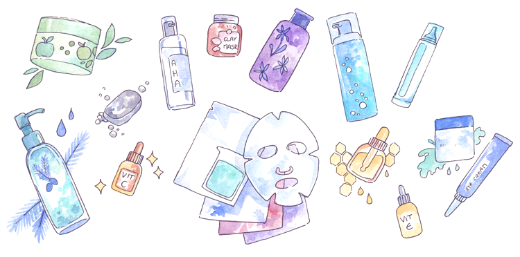
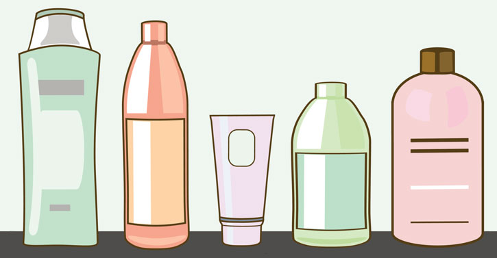

Di Posting Oleh Mona Rosanah

Morning & Night skincare routine
- - Morning => facial wash, moisturizer, sunscreen dan lipbalm.
- - Night => micellar water, facial wash, moisturizer, serum, lip serum dan maskeran.
Selengkapnya →
Di Posting Oleh Mona Rosanah

Bodycare
- - Gunakan body wash yang melembabkan
- - Gunakan body scrub secara teratur.
- - Gunakan body lotion setelah mandi.
- - Gunakan body serum sebelum tidur.
Selengkapnya →